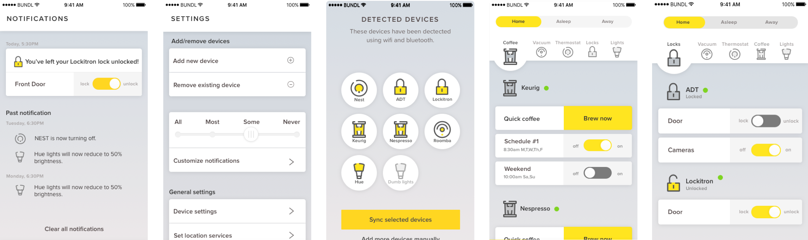
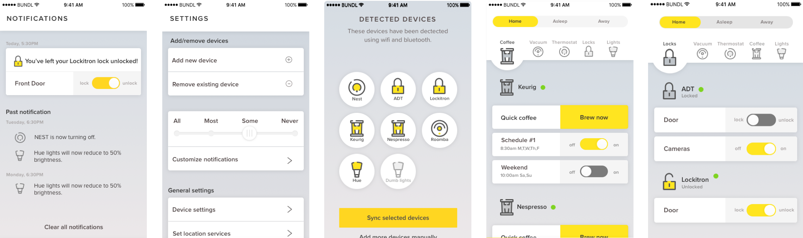

The challenge
Smart device makers promise a better, more convenient home. But the proliferation of different device makers, apps and interfaces has only made the connected home more complicated to manage. My team was challenged to design a solution to bring fulfill the smart home's promise of simplicity.
Research and problem definition
Having only 6 weeks part-time to complete the project, our first priority was to aggressively narrow the scope of our app. By the numbers of features in control, we would have the time to work on multiple iterations.
To do this, we talked to different kinds of home owners to find one that has a profile suitable for a small app. After a few conversations, we managed to eliminate some red-herring user types like the Gadget Geek and Work Warriors. Instead we found the following groups to be very interesting:
Savvy homemakers: people who use tech to bring their family together, making their home life more interesting.
Tech-saturated professional: people who work in and own a lot of tech, but are tired of their devices demanding so much their time and attention.
We ended up choosing the tech-saturated professional because we found it a fascinating challenge to design technology for someone who is tired of it. Also, given our limited time, getting testing data for this user type was going to be much easier.
To quickly access the data we’ve gathered from our research, we created a persona and problem statement.
Persona |
The tech-satured professional needs an easy way to manage his many smart home devices.

In the same vein, we also created 4 guiding design principles to act as fence posts for our design exploration.
- Utilitarian: Persona views his devices as tools, not toys. Our app should reflect that.
- Intrude only when important: Persona is inundated with notifications. Our app should not exacerbate that.
- Anticipate, don’t ask: Persona is tired of micromanaging his tech. Our app works for the user, not the reverse.
- Accessible on the go: Persona is always on the go. Our app accounts for divided attention.
Generating rough concepts
To get both conceptual and usability feedback, we tested using a mix of paper and Axure prototypes. In two rounds of tests, we tried over a dozen concepts, with the most interesting ones presented below:
Notifications |
- Goal: Create a 2 tiered notifications system to seperate the urgent information from the nice to know.
- Principle: Intrude only when important.
- User feedback: Almost universally positive. 😄

Functions |
- Goal: Reduce steps needed to adjust the home by grouping device functions into categories that match our users’ daily schedule.
- Principle: Anticipate, don’t ask
- User feedback: Loved it, but wanted to see what was being changed. 🙂

Dashboard |
- Goal: Reduce clicks needed access device functions by bringing functions out of their devices and directly into the main screen
- Principle: Accessible on the go
- User feedback: Some liked a device-first design for its directness, but others liked the speed of function-first. 🤔

The first two concepts were quickly implemented in our final wireframes, but the mixed feedback on the third made it hard to decide on the dashboard design. Because of our limited time, we chose to move on to the UI phase while generating versions of both dashboard styles to test in the next phase.
Translating concepts into UI
I chose to test the function-first dashboard in my prototype because I believed that for something used as frequently as their home devices, users would prefer something that is quick to use over something clear but more cumbersome.
Based on our wireframes , we designed UI concepts that reflect everything we learned thus far. I based my visual explorations mostly on the following:
- The home that our persona would likely own
- Differentiation from competitors
Among all the UI concepts I developed, I chose to move forward with the style that, according to users, “felt most like a traditional app” because I did not want to overwhelm the user with both an unfamiliar UI and a unfamiliar dashboard design. Below, you can see my function first design on the left and my teammate's device first design on the right.

After 7 interviews, many flaws in the functional approach came to light. Here are the two main ones:
- Hi-fi animations were needed to convey how many of the non-standard interactions would work
- Users think about their home in term of what objects they own, not what functions their objects afford.
For these reasons and more, this concept was discarded. Instead, we used our teammate Preunky’s device-driven concept, which mapped well to our users’ mental model, thanks to the simple carousel of devices and use of iOS-settings-like toggles.
Based on this design, we added back parts of the discarded prototype that tested well, such as:
Top placement of modes: As the bottom nav and mode toggle were both often used features, seperating them would prevent some fat finger errors.

Setting groups: expanding the group concept from modes to settings allowed users to make better use if their advanced settings.
Better integrated status display: Using the device icon itself to display the status was both a delightful touch and a space saver.

Combining the best aspects of each prototype into a device centric framework, we developed the screens that comprised BUNDL's final design.
What I've learned
This project made me appreaciate the importance of understaning our users' mental model. Even if a design is technically faster, it may still feel harder to use if it doesn't behave as the user expects.
Looking back, there were many things I could have done to bridge the gap. For example, I could have leveraged the onboarding process to not only introduce features, but also the mental model. In the same vein, I could have used progressive reduction principles to gradually fade away the device while simulatenously bringing forward its functions. The list goes on.
On a broader level, I've become more adept at testing concepts using the right prototyping tool and at the right fidelity. For example, I've learned to use scrappy wireframes to isolate UX from UI testing and animations to show more complex interactions.
Finally, given more time, I would have liked to consider the limitations of technology more in our designs. In fact, our concept detected devices via bluetooth and wifi when this is not actually possible. If we ever wanted to make BUNDL a real app, we'd have to find an alternate solution.